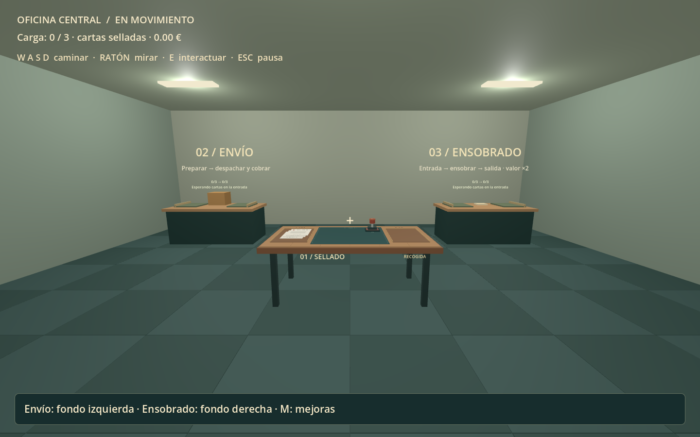01 / 13La oficina completaSellado en el centro, envío a la izquierda y ensobrado a la derecha.Descargar imagen original ↗
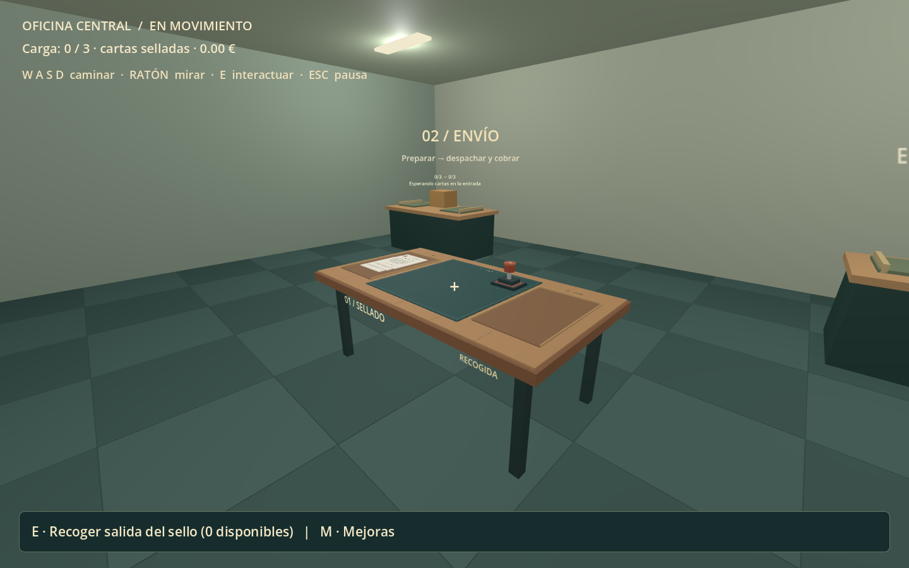02 / 13Mesa a tamaño normal2,04 m de ancho, 1,12 m de fondo y unos 77 cm de altura. Ahora ocupa el espacio de un escritorio.Descargar imagen original ↗
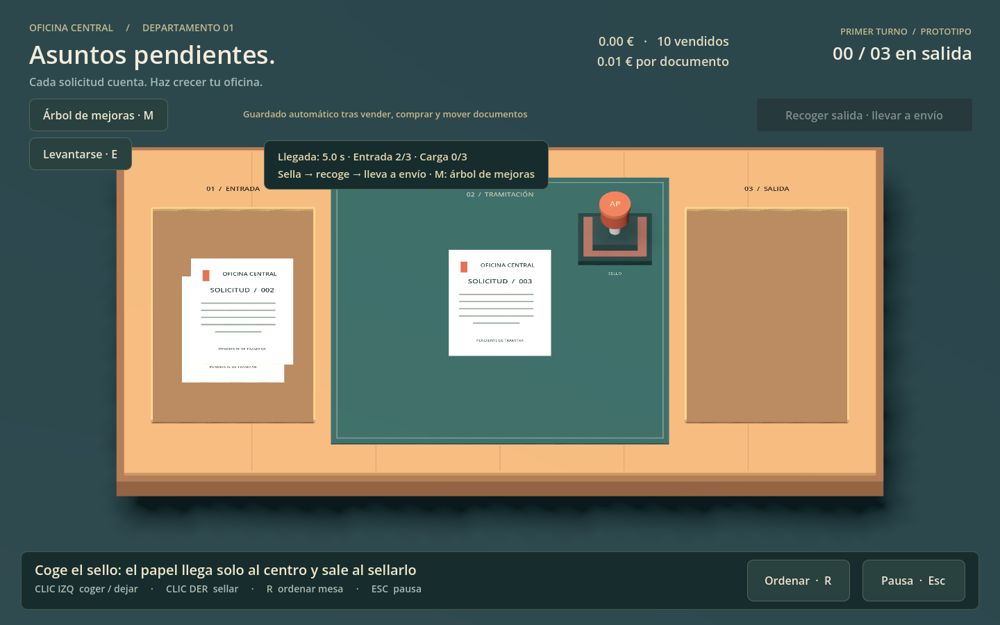03 / 13La carta llega al centroLa vista de trabajo es un primer plano. Clic izquierdo para coger el sello.Descargar imagen original ↗
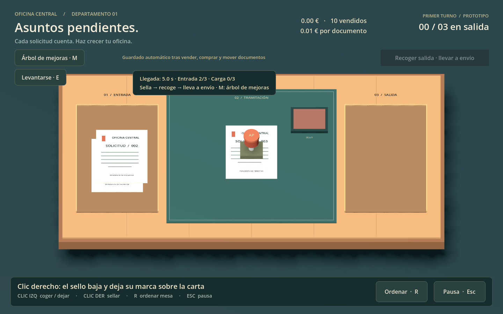04 / 13El golpe del selloClic derecho para sellar. Esta captura muestra el golpe sobre la carta.Descargar imagen original ↗
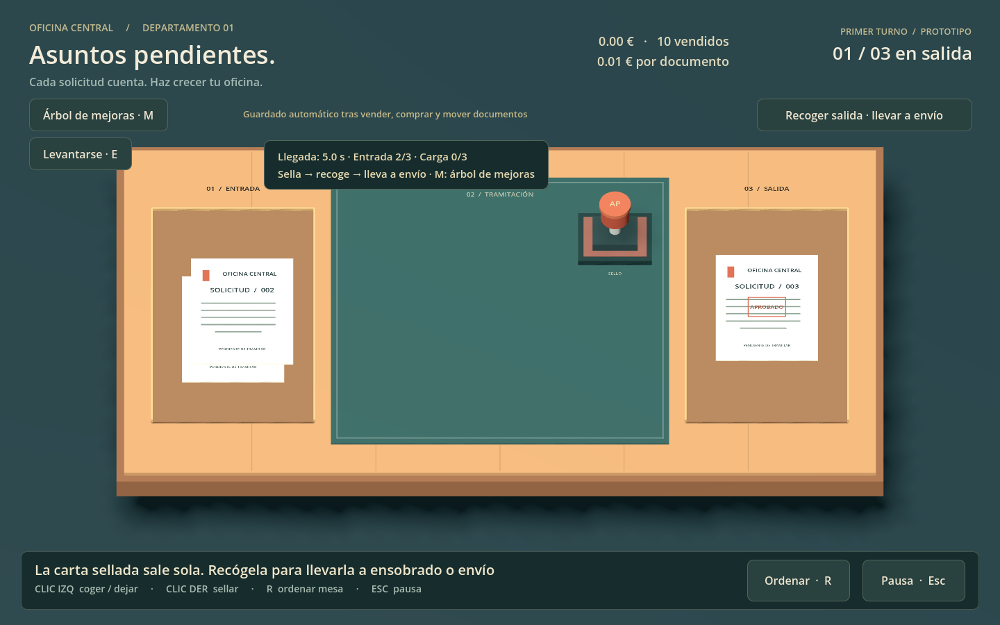05 / 13Retirada automáticaLa carta conserva la marca APROBADO y se mueve sola a la bandeja de salida.Descargar imagen original ↗
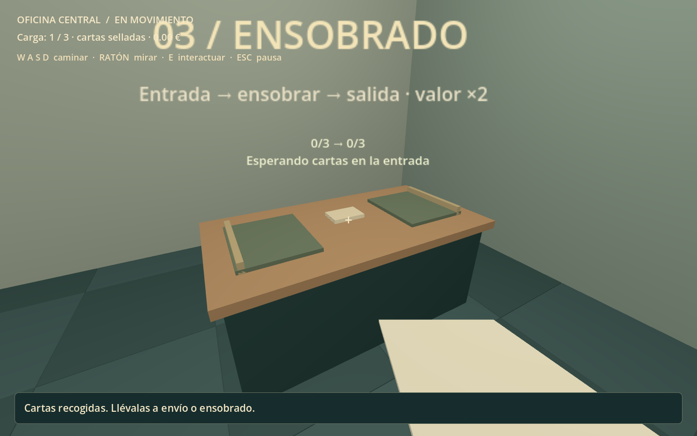06 / 13Mesa de ensobradoLleva las cartas selladas hasta aquí y pulsa E para abrir el puesto.Descargar imagen original ↗
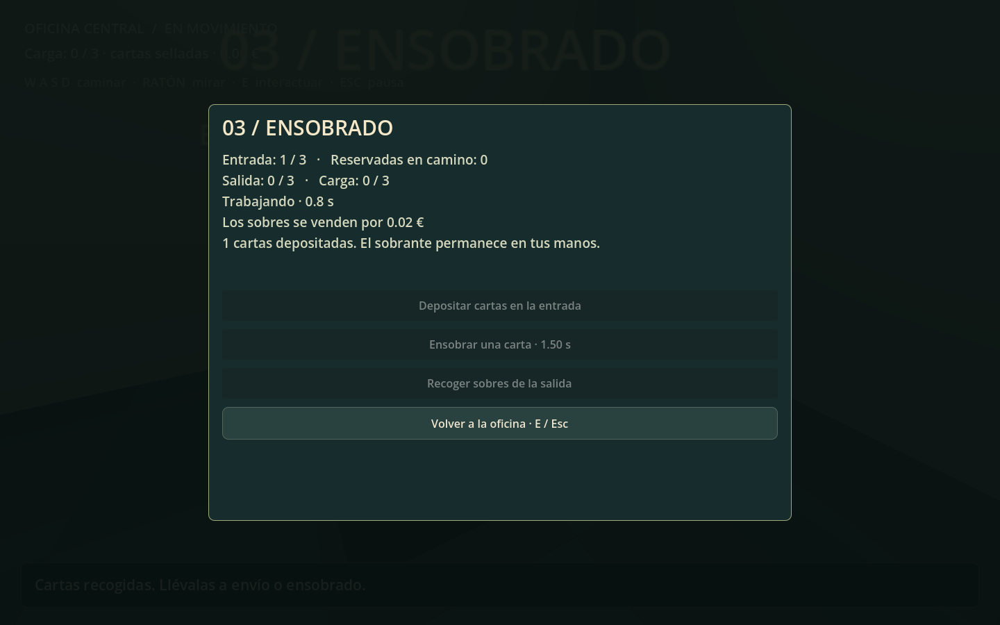07 / 13Ensobrado en cursoDepositar → Ensobrar una carta. Actualmente se realiza mediante botones y un temporizador de 1,5 s; todavía no hay animación de introducir la carta en un sobre.Descargar imagen original ↗
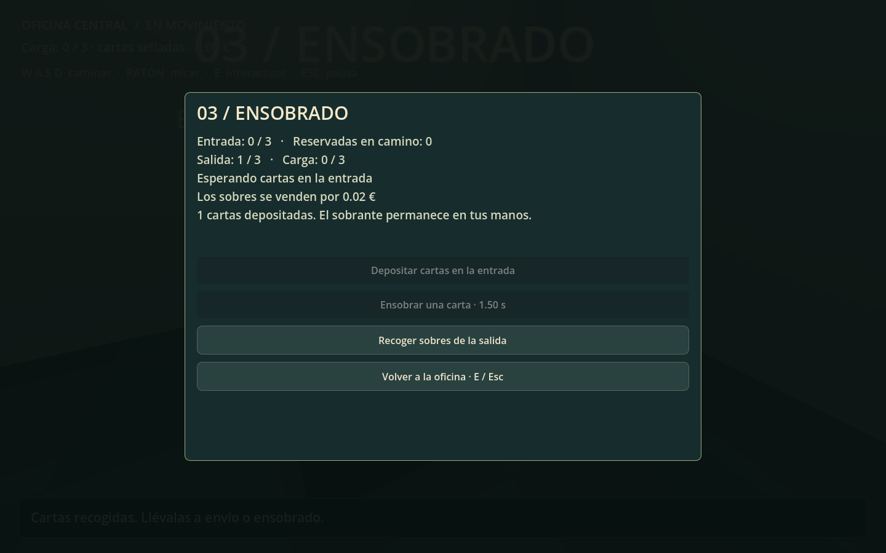08 / 13Sobre terminadoLa carta pasa de entrada a salida. Recoger sobres permite llevarla a envío.Descargar imagen original ↗
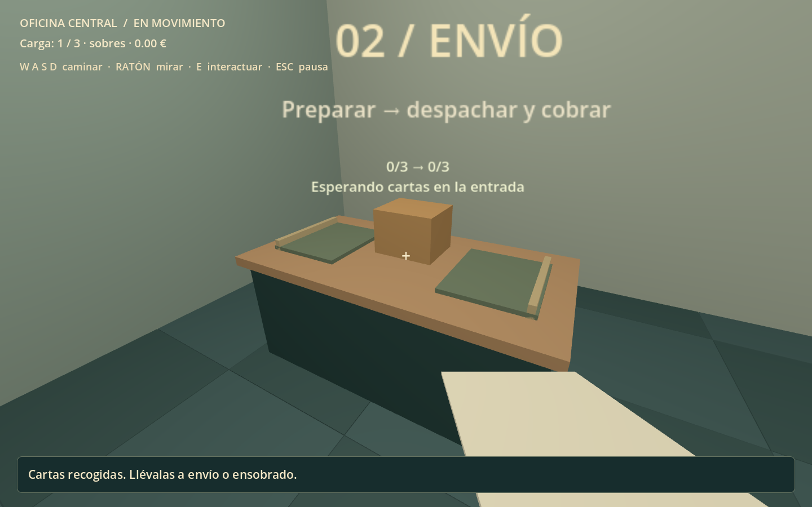09 / 13Mesa de envíoAdmite cartas selladas o sobres. Pulsa E para depositar la carga.Descargar imagen original ↗
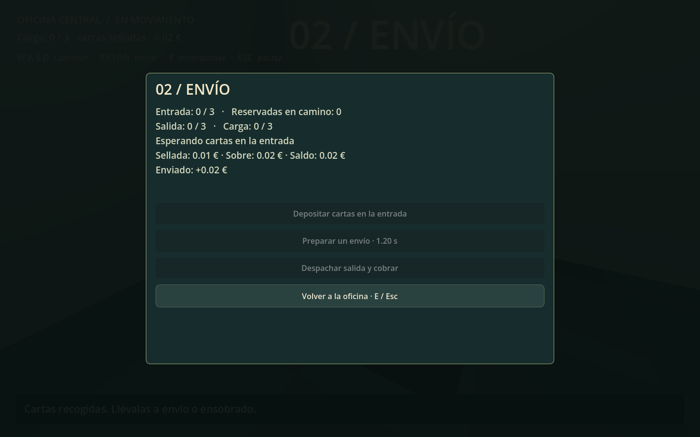10 / 13Preparar y cobrarDespués de preparar el envío, despachar consume la carta y paga una sola vez. Aquí el sobre ha pagado 0,02 €.Descargar imagen original ↗
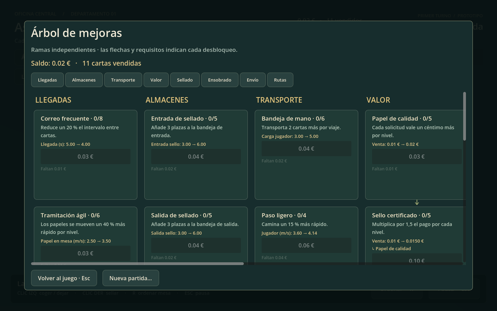11 / 13Ramas de mejorasM abre el árbol: recepción, almacenes, carga y valor se compran por separado.Descargar imagen original ↗
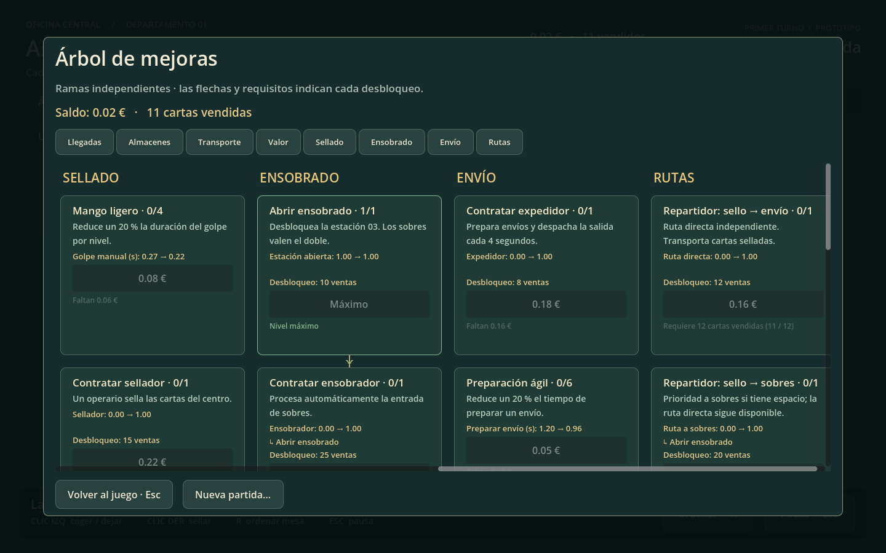12 / 13Estaciones, personal y rutasOperarios y repartidores tienen contrataciones y requisitos distintos.Descargar imagen original ↗
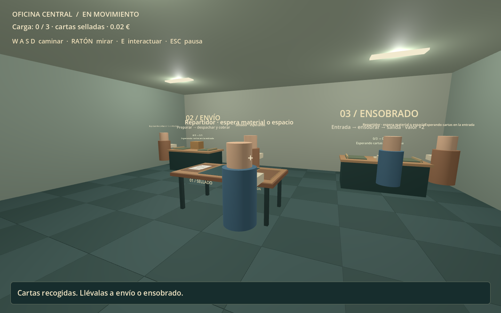13 / 13Oficina con empleadosRepresentación provisional de operarios y repartidores, junto a la mesa ya reducida.Descargar imagen original ↗